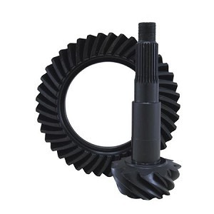
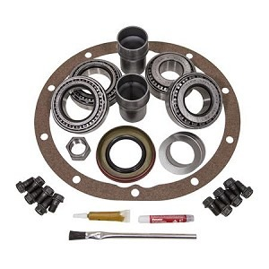
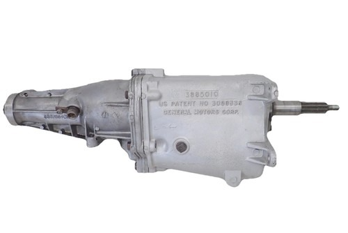
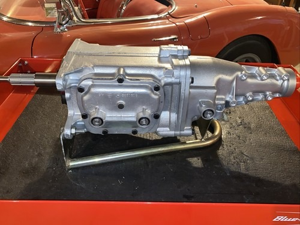
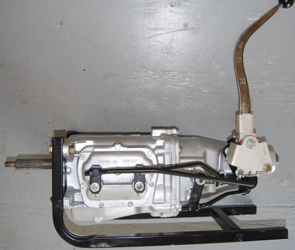
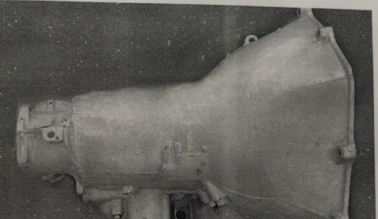

Limited Slip
YDGGM9.5-33-1
Yukon Dura Grip Positraction for GM 9.5” with 33 Spline Axles
Heavy-duty Yukon Dura Grip limited-slip differential / positraction unit for GM 9.5-inch axle applications with 33-spline axle shafts.
View DetailsWhatsApp
No online pricing is shown. Click any part to inspect details, zoom the product photo, and request availability by phone or WhatsApp.
YDGGM9.5-33-1
Heavy-duty Yukon Dura Grip limited-slip differential / positraction unit for GM 9.5-inch axle applications with 33-spline axle shafts.

YDGGM12P-3-30-1
Yukon Dura Grip positraction differential for GM 12-bolt passenger car rear ends with 30-spline axles and 3.08 to 3.90 gear ratio applications.

ZG GM55P-308
USA Standard Gear ring and pinion set for GM Chevy 55P differential in a 3.08 gear ratio.
YPKGM55P-P/L-17
Yukon Power Lok positraction internal parts kit for GM 55P applications using 17-spline axles.

ZG GM12P-373
USA Standard Gear ring and pinion gear set for GM 12-bolt passenger car rear ends in a 3.73 ratio.

ZK GM55CHEVY
USA Standard master overhaul kit for GM Chevy 55P and 55T differential service and rebuilds.

3885010
Vintage GM Muncie M-21 4-speed manual transmission using the 3885010 case, commonly associated with Chevrolet, Buick, Pontiac, and Oldsmobile muscle-era applications.

1969 M21
Restoration-style 1969 Muncie M21 close-ratio 4-speed transmission for classic GM performance vehicles.

M21 1968-1974
Close-ratio Muncie M21 4-speed manual transmission option for 1968–1974 classic GM restoration and performance applications.

1930 Transmission
Antique manual transmission assembly for early 1930s restoration projects and vintage drivetrain service.